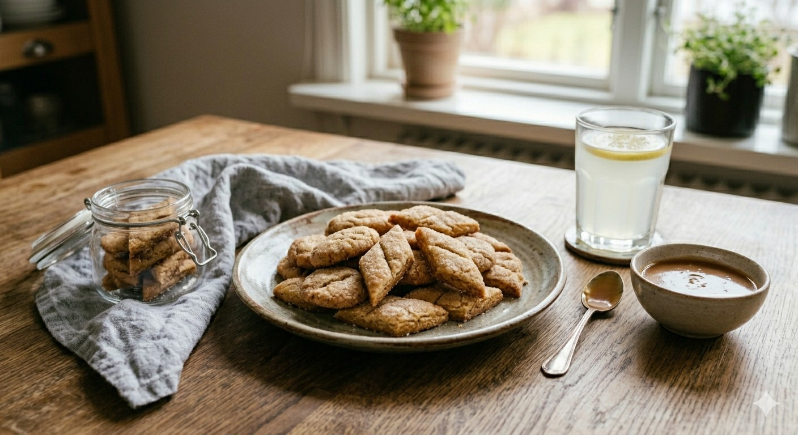

Kolakakor
Snabbt, enkelt och gott. Perfekt att frysa in och ta fram när man får besök, eller varför inte när suget smyger sig på fram mot kvällen?

Ingridienser:
- Smör 100 g
- Strösocker 1 dl
- Vaniljsocker 1 msk
- Ljus sirap 1 msk
- Vetemjöl 2 dl
- Bakpulver 1 tsk
- Malen Ingefära 1 tsk
Gör så här:
- 1. Sätt ugnen på 175° (160° varmluft).
- 2. Skär smöret i tunna skivor. Rör smör och socker poröst i en skål.
- 3. Tillsätt vaniljsocker, sirap, mjöl, bakpulver och ingefära. Arbeta snabbt ihop till en deg..
- 4. Ta upp degen på en lätt mjölad arbetsbänk och dela den i tre delar. Rulla ut till längder, ca 40 cm långa. Lägg dem på en plåt med bakplåtspapper. Platta till dem något.
- 5. Grädda mitt i ugnen tills längderna är ljusbruna, 10–12 min.
- 6. Skär de varma längderna i sneda ca 2 cm breda kolakakor.
Smaksättningar:
- Strö lite flingsalt ovanpå direkt efter gräddning för salted caramel-känsla.
- Tillsätt lite Kanel & kardemumma i degen – ger mer café-/bullsmak.
- Tillsätt lite Espresso eller snabbkaffe i degen – lite vuxnare kolasmak.
Extra crunch eller topping:
- Ringla över lite mörk choklad efteråt - Supergott!
- Strö över lite hackade mandlar, pekannötter eller hasselnötter.
- Strö över lite sesamfrön eller pumpafrön för lite mer tuggmotstånd.